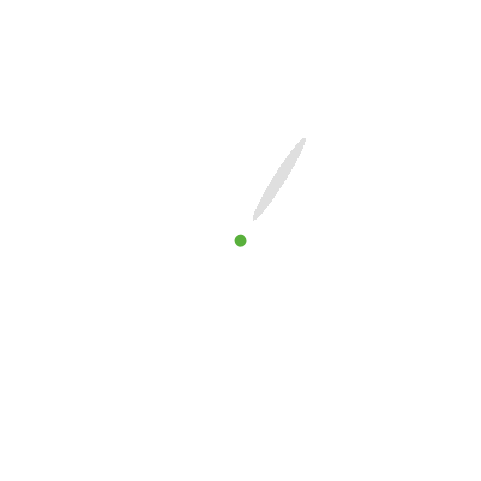
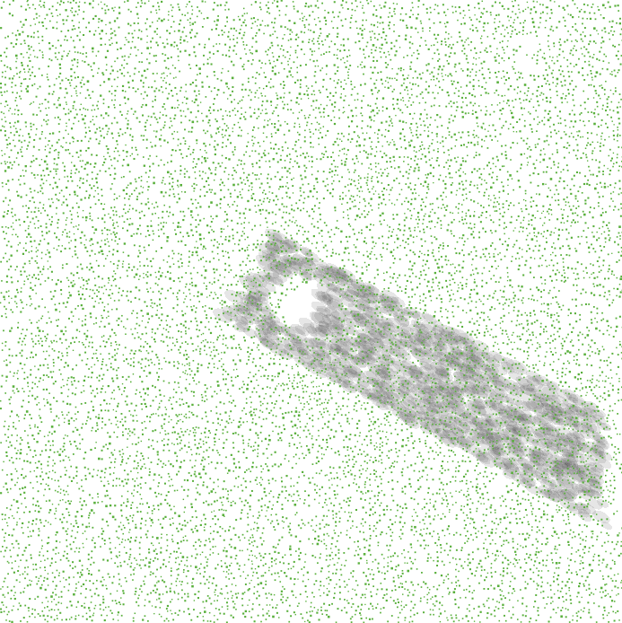

OUR MODELS
We want our model to be accessible and easy to use. We therefore used the programming language NetLogoWeb that brings the model directly to you!
Our goal was to build a tool that accurately predicts the light availability on the forest floor.
Light is important for photosynthesis and competition for light between trees is a key driver of biodiversity!
In the face of climate change, we need models that can simulate the development of forest regeneration. We hope that our model can contribute to this difficult task.
We developed two versions of our shading model: A Single-Tree-Model and a Stand-Model.
MODEL DESCRIPTION (ODD)
We used an ODD-Protocol (= Overview - Design Concepts - Details, after Grimm et al. 2006, Grimm et al. 2020) to describe our model. You can download the ODD HERE.
SINGLE-TREE-MODEL
The Single-Tree-Model is here to understand the influence of a single tree on the shading patterns on the ground.
It is quite intuitive and easy to start. Please have a look:
OUR SINGLE-TREE-MODEL

STAND-MODEL
With our Stand-Model we want to know how forests influence light conditions on the forest floor.
There often is not enough light below the forest canopy for the regeneration to grow.
Foresters therefore cut trees and create artificial gaps inside the canopy.
Inside these gaps, light availability is increased and tree saplings can grow.
We wanted to know how gap size influences shading in gaps and if shading at the equator is different from shading at the arctic circle.
You can try for yourself:
OUR STAND-MODEL

NetLogo Models
If you want to download our NetLogo models, please check out THIS SITE.